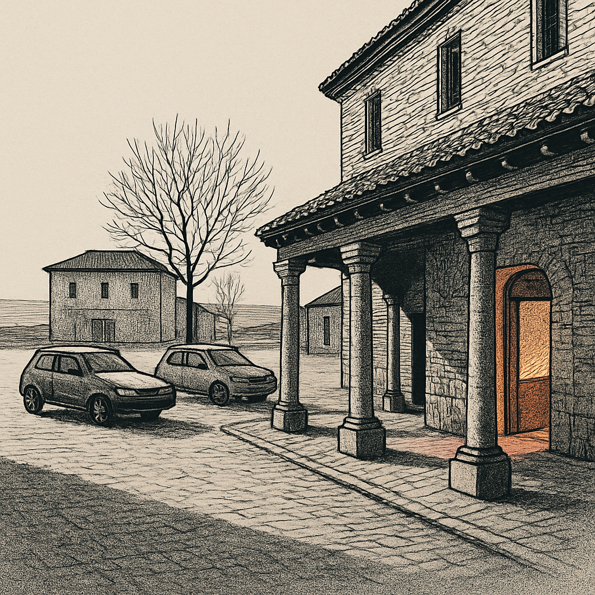

Los 278 vecinos que llegaron y los 239 que faltan: qué sostiene hoy a Tierra de Campos
En 2024 doce municipios de Tierra de Campos sumaron 278 personas por migración. El padrón, sin embargo, solo creció en 39. Entre una cifra y otra se pierden 239 vecinos que la llegada de gente de fuera apenas alcanza a compensar. Los números son del INE; la escena inicial de este reportaje es una reconstrucción, y así se advierte.

Una plaza a media mañana
Nota al lector: la escena que abre este reportaje es una reconstrucción a partir de datos oficiales del INE. No describe a personas concretas ni conversaciones reales. Todo lo demás son cifras verificadas y su lectura.
Imagina la plaza de Villada un martes cualquiera de invierno, hacia las once. Un soportal, la puerta de la panadería abierta, dos coches aparcados de lado y el frío quieto de la Tierra de Campos. Durante once años seguidos este pueblo perdió habitantes, uno tras otro, sin que nadie lo anunciara en voz alta. Y de repente, entre 2024 y 2025, el padrón sube: veintinueve personas más. No es una multitud. Son veintinueve empadronamientos que rompen una racha larga y que, mirados de cerca, cambian de significado.
Porque esos veintinueve no salieron de la nada. El saldo migratorio de Villada en 2024 fue de más treinta y tres personas, repartidas casi a partes iguales entre quienes llegaron del extranjero y quienes vinieron de otros municipios españoles. Sin ellas, la cuenta de la plaza sería otra: la de un pueblo que sigue vaciándose despacio y que aprendió a no esperar buenas noticias del padrón.
La pregunta que no se ve en la cifra grande
La pregunta de este reportaje no es cuánta gente llega a Tierra de Campos. Esa la responde el INE y el número, en apariencia, es bueno. La pregunta es otra: si en los doce pueblos que hemos mirado llegaron 278 personas por migración en 2024, ¿por qué el padrón solo creció en 39 habitantes de 2024 a 2025? ¿Adónde fueron los otros 239? Responder a eso obliga a separar dos cosas que suelen confundirse: la gente que entra y sale de un pueblo, y el balance final de cabezas empadronadas al terminar el año. No es lo mismo, y la diferencia entre ambas cuenta la historia real de la comarca.
Lo que dice el INE y lo que ponemos nosotros
Conviene ser honestos con lo que es dato y lo que es cálculo. El saldo migratorio de cada municipio (cuánta gente llega menos cuánta se va) es una cifra oficial del INE, de su Estadística de Migraciones y Cambios de Residencia, referida a 2024. El cambio de padrón también es oficial: sale de las Cifras de Población, comparando la revisión de 2024 con la de 2025. Hasta ahí, números publicados. La resta entre uno y otro, en cambio, la hacemos nosotros; no es una cifra que el INE difunda.
Esa diferencia se explica sobre todo por las defunciones menos los nacimientos, pero puede incluir además ajustes y bajas del padrón, y por eso no la llamamos saldo vegetativo como si fuera oficial. El INE no publica nacimientos ni defunciones municipio a municipio en pueblos de este tamaño por secreto estadístico, así que lo prudente es decir lo que es: lo que queda después de las dos restas.
Con esa cautela por delante, los números de 2024 son claros. Los doce pueblos sumaron un saldo migratorio de más 278 personas, de las cuales 197 llegaron del extranjero y 81 desde otros municipios españoles. El padrón conjunto, sin embargo, solo creció en 39 habitantes entre 2024 y 2025. La diferencia que se pierde por el camino es de 239 personas. Dicho de otro modo, y sin la llegada de esas 278, los doce pueblos habrían perdido en torno a 239 vecinos en un solo año. La migración no está haciendo crecer la comarca; le está tapando el agujero.
Cuando ganar por migración no basta
Los casos que mejor lo enseñan son los que suben por un lado y bajan por el otro. Sahagún ganó 35 personas por migración en 2024 (28 del extranjero, 7 de dentro de España) y aun así su padrón cayó de 2.398 a 2.380 habitantes, dieciocho menos. La diferencia que se pierde por el camino allí es de 53 personas, la mayor de los doce municipios. Es un pueblo que recibe gente y que, pese a ello, sigue perdiendo cabezas.
Carrión de los Condes cuenta algo parecido en tono menor: sumó 31 por migración, 23 de ellas del extranjero, y terminó con dos habitantes menos, de 1.999 a 1.997. La migración casi le sostiene el número, pero no del todo. Estos ejemplos no son excepciones raras; son la mecánica de fondo de casi toda la comarca. Entra gente, se van los años, y la balanza apenas se mantiene.
Doce pueblos, doce cuentas distintas
Vistos de uno en uno, los municipios no se parecen tanto. Medina de Rioseco es el que más recibió: un saldo migratorio de más 95 personas, de las cuales 90 llegaron del extranjero, y un padrón que subió de 4.537 a 4.617 habitantes, ochenta más. Es el caso donde la llegada de fuera se traduce con más claridad en crecimiento real. Villalpando presenta un perfil distinto, casi opuesto en su origen: sumó 70 por migración, pero 66 de esas personas vinieron de otros municipios españoles y solo 4 del extranjero, y su padrón creció en 34, de 1.399 a 1.433.
Paredes de Nava ganó 42 por migración (32 del extranjero) y subió en 16 habitantes; Fuentes de Nava sumó 18 y creció en 14; Villarramiel tuvo un saldo migratorio positivo de 9 y aun así perdió 6 vecinos, porque la diferencia que se le va por el camino es de 15. Villada, ya lo vimos, rompió once años de caída con 29 habitantes más. La foto no es uniforme: hay pueblos donde la llegada de gente empuja el padrón hacia arriba y otros donde solo frena la caída.
Y no todos suben. Mayorga tuvo un saldo migratorio de menos 27 (con 19 personas menos del extranjero) y perdió 55 habitantes, de 1.409 a 1.354. Villalón de Campos cerró en menos 11 de saldo migratorio y menos 23 de padrón; Becerril de Campos, en menos 11 y menos 20; Valderas, en menos 6 y menos 10. En estos cuatro municipios ni siquiera hubo llegada neta que compensara nada. La distancia entre un pueblo que suma noventa personas del extranjero y otro que pierde diecinueve no cabe en un solo titular sobre la comarca.
Aquí conviene frenar. Sabemos cuántas personas llegaron y cuántas se fueron, pero el INE no publica a este nivel de qué países vienen ni en qué trabajan quienes se instalan. Eso no está en los datos y no vamos a inventarlo ni a insinuarlo. Es, justamente, lo que falta por averiguar, y solo se averigua preguntando en los pueblos, en las panaderías, en los ayuntamientos, a las propias familias. Quienes llegan no son un instrumento demográfico ni la solución a nada: son vecinos, y merecen que se escriba sobre ellos como sobre cualquier otro vecino del pueblo.
La objeción que no se puede esquivar
Hay una lectura que desmonta media euforia. Un saldo migratorio positivo en 2024 no garantiza que esas personas sigan empadronadas dentro de dos años. La comarca no solo necesita que llegue gente; necesita que se quede, y eso los números de un ejercicio no lo dicen. Villada rompió once años de caída, sí, pero una racha larga de descensos advierte de lo frágil que puede ser un solo dato bueno.
Además, la diferencia de 239 personas que se pierde por el camino no va a desaparecer. Mientras las defunciones superen a los nacimientos —que es la explicación más probable de esa resta, aunque no la publique el INE por municipio—, la migración tendrá que seguir creciendo cada año solo para mantener el padrón donde está. Tapar un agujero no es lo mismo que cerrarlo. Y un tapón que depende de que cada año lleguen más personas que el anterior es, por definición, un equilibrio inestable.
Vuelta a la plaza
Volvamos a la plaza de Villada, al soportal y a la panadería abierta. Los veintinueve del padrón siguen ahí, en algún portal, en alguna casa que llevaba tiempo cerrada. La cifra existe, es real, y por un año le ha dado la vuelta a una historia de once años de restas. Lo que la plaza no dice es cuántos de ellos estarán en el mismo soportal el próximo invierno, ni si el año que viene harán falta treinta y tres más para volver a empatar la cuenta.
Queda, sobre todo, lo que ningún cuadro del INE contesta: quiénes son, de dónde vinieron, a qué se dedican, por qué eligieron este pueblo y no otro. Los datos dicen qué pasó. La respuesta a por qué está detrás de esas puertas, y todavía no la hemos llamado.
- INE, Estadística de Migraciones y Cambios de Residencia (operación 455, tabla 69767), saldos migratorios por municipio, 2024
- INE, Cifras Oficiales de Población (revisión del Padrón Municipal), series 1996-2025, comparación 2024-2025
- Cálculo propio de El Terracampino: diferencia entre saldo migratorio y cambio de padrón por municipio